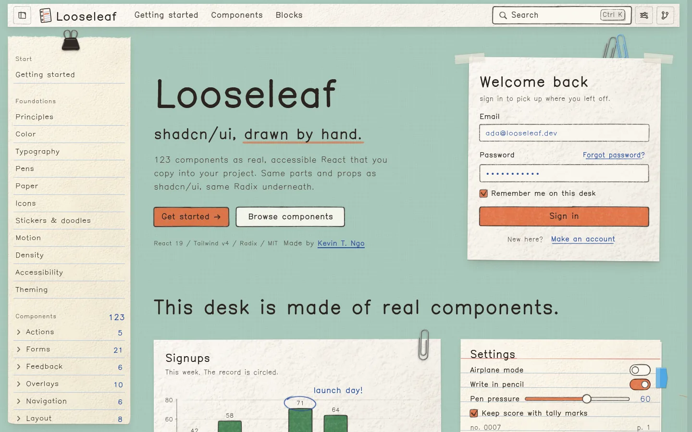
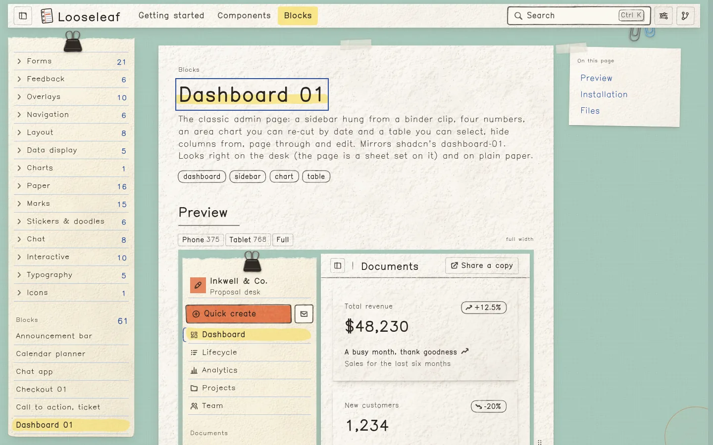
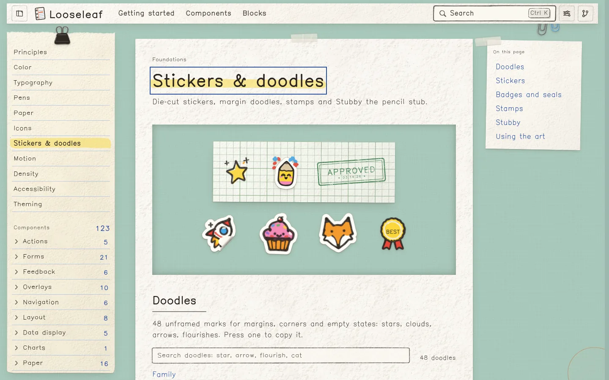

这是什么
Looseleaf（活页纸）是一套 React 组件库，同时也是一个 shadcn registry。一句话概括：shadcn/ui 的骨架，手绘的皮。按钮、输入框、日历、侧栏、图表，所有界面都像画在奶油色的纸上：深色毡头笔勾边，马克笔平涂填色，纸面有纹理，卡片用胶带、图钉或长尾夹固定，需要时还能贴贴纸、盖印章。
关键是“换皮不换骨”。Looseleaf 沿用 shadcn/ui 的部件划分、props 和 data-slot 名称，底层仍是 Radix，所以原本用 shadcn 写的 JSX 不用改，换掉组件文件就能换上这身手绘风。作者的原话是：“The charm is decoration; the semantics are ordinary Radix.”（好看的是装饰，语义还是普通的 Radix。）
规模上，README 列了 123 个组件（shadcn/ui 全部部件，外加纸张物件、标记、贴纸、画板和聊天组件）、61 个区块（侧栏、登录注册、仪表盘、设置、定价、聊天、笔记和落地页段落）、一套代码绘制的美术素材（160 个图标、48 个涂鸦、88 张贴纸，以及吉祥物铅笔头 Stubby 的 15 种姿势），还有作者自制的手写字体 Kevin Sans。
仓库快照（2026-11-04 00:50 UTC+8 核）
| 项 | 值 |
|---|---|
| Star / Fork | 270 / 0（GitHub API） |
| 创建 / 最近推送 | 2026-11-01 13:16 / 2026-11-02 02:25（UTC+8） |
| 提交 | 9 个，均由 Kevin T. Ngo 提交；首个提交 41e6ad9“Looseleaf: shadcn/ui, drawn by hand”，附 Co-Authored-By: Claude Opus 5.5；最新 4bdb647（让文档在手机上能给长单词断行） |
| 技术栈 | TypeScript；React 19、Tailwind CSS v4、radix-ui、cmdk、vaul、sonner、react-day-picker、embla-carousel、react-hook-form + zod；Vite 构建文档站，Vitest 测试 |
| registry.json | 213 项：ui 组件 123、区块 62（含 1 个“全部区块”合集，实际 61 个）、lib 19、hook 5、theme 2、style 1、font 1 |
| 仓库规模 | Git 树约 2,900 个条目；src/docs 1,236 个、src/blocks 317 个、tests/ 下百余个测试文件 |
| 许可 | MIT（根 LICENSE + API 字段 + README 三处一致）；IBM Plex Mono 为 SIL OFL 1.1 |
适合谁
- 已经在用 shadcn/ui 的前端团队：想给产品、内部工具或活动页换一身有温度的“笔记本”风格，又不想重写组件逻辑和无障碍处理。
- 做教育、笔记、手账、儿童或创意类产品的人：贴纸、印章、便利贴、拍立得、信封、票根、记分划线（tally）这类“纸上物件”组件可以直接用。
- 研究设计系统的人：它把“手绘感”拆成可检查的规则（十条规矩）和设计令牌（
--ll-*），是“风格怎样工程化”的一个完整样本。 - 用 AI 写前端的人：组件以源码形式落进你的仓库，AI 助手能直接读、直接改；仓库本身也是作者与 Claude 合写的。
门槛：React 19、Tailwind CSS v4、shadcn CLI 4.x，并且项目已经跑过 shadcn init、配好 @/* 路径别名；浏览器需要支持 :has()、SVG 分组上的 clip-path 和 mix-blend-mode（文档站说近两年的浏览器都行）。
看一眼：桌面、区块与贴纸



它是怎么画出来的
README 的“How it works”一节讲清了机制，可以拆成四点：
- 画和字分两层。凡是“画出来”的东西，都是放在真实 DOM 文字后面的一个
<svg data-ink>。按钮的文字、表单控件、焦点和键盘行为照旧由 Radix 或原生元素负责，画只是装饰层，不抢焦点也不接点击。 - 每一笔都是带种子的纯函数。每个组件有一份绘制“配方”（
src/lib/ink/recipes/<组件>-ink.ts），输入种子，输出用 CSS 变量着色的 SVG。同一个种子，服务端和浏览器画出同一条线，SSR 水合不会对不上，截图也稳定。默认种子来自useId()，也可以传seedprop。所以两个按钮会略有不同，但同一个按钮每次都一样。 - 状态靠 CSS，不靠 React。悬停、按下、聚焦时要显示的笔触都预先画好，靠 CSS 切换图层，交互时不重新计算绘制。
- 一切皆令牌。颜色、笔宽、密度都是
--ll-*令牌，并映射到 shadcn 的语义变量上。改一个--ll-marker，主色就全局跟着变；还有三档密度，其中“calm”会让密集的仪表盘安静下来，动效也跟着关掉。
文档站补了两个细节：控件的尺寸要在浏览器里测量，所以服务端渲染和首帧只显示一圈铅笔轮廓，挂载后才补全；图标、贴纸、印章、胶带和 Stubby 这类“固有尺寸”的美术不需要测量，服务端 HTML 里就是完整的。
怎么用
- 准备一个 shadcn 项目：
npx shadcn@latest init（React 19 + Tailwind v4，配好@/*别名）。 - 注册命名空间，每个项目一次。在
components.json里加：
也可以用命令{ "registries": { "@looseleaf": "https://kevintngo.github.io/looseleaf/r/{name}.json" } }npx shadcn@latest registry add "@looseleaf=https://kevintngo.github.io/looseleaf/r/{name}.json"。不注册的话，每一项也能直接按 URL 安装。 - 按需添加：
注意：全家桶会用它的 Notebook 调色板替换你现有的 shadcn 颜色令牌（CLI 会先询问）；只装单个组件则保留你已有的令牌，只补上缺少的 Looseleaf 令牌。贴纸、图标、涂鸦等美术包是单独的项，只随用到它们的组件一起安装。npx shadcn@latest add @looseleaf/button # 单个组件 npx shadcn@latest add @looseleaf/login-01 # 一个区块，落在 components/blocks/ npx shadcn@latest add @looseleaf/looseleaf # 全家桶：主题、字体、绘制引擎和全部组件 - 在根部挂
InkProvider：
用 Tooltip 和 toast 的话，按文档还要在根部放import { InkProvider } from "@/lib/ink/react" import { Button } from "@/components/ui/button" export function App() { return ( <InkProvider> <Button>Save changes</Button> </InkProvider> ) }TooltipProvider和一个Toaster。 - 检查效果：按文档的说法，正确时会看到一个“毡头笔轮廓里平涂赤陶色”的按钮；如果只是一个普通描边方框，说明绘制引擎没挂上，去看文档的排错一节。
主题会自带 Kevin Sans 字体；想手动加载也可以 @import url("https://kevintngo.github.io/looseleaf/fonts/kevin-sans.css");。组件以源码形式进入你的仓库（components/ui/*.tsx、lib/ink/*），README 的说法是“your code, not a dependency”（是你的代码，不是依赖）。不用 CLI 的话，文档站每个组件页都有 Manual 标签页，给出完整源码。
“手的十条规矩”摘要
文档站的 Principles 页把手绘感写成十条审查清单，每个组件都要过一遍。下面摘译前几条，看它怎样把“像手画的”变成能检查的规则：
- 线条是有压力的带子：从不用等宽描边。每条线都是宽度变化的填充形状，下笔处粗、提笔处细、墨干处断。
- 直线靠尺子画：横线保持水平，框要闭合，线头轻轻收尾；只有圈词这类“笔记”才会画过头。
- 没有两件东西完全相同：所有图形都由种子生成。
- 填色是单独一层：马克笔在勾线之后才涂，故意错开几个像素；悬停时错位变大，按下时对齐。
- 纸有齿纹：光从左上方来，一张浮雕纹理贴图适配所有纸色。
- 阴影是暖棕色、很短：不用灰色长模糊，那是“悬浮屏幕”的感觉，不是纸。
- 纸可以歪，字不能歪。
颜色也各有分工：深色毡头笔写字和勾边，蓝色笔代表“你”（链接、输入的文字、焦点环），铅笔写说明，红铅笔表示纠错和危险（一定配文字、图标或阴影线，不单靠颜色），绿铅笔表示没问题，赤陶色马克笔只给一屏里唯一的主操作，黄色荧光笔用于强调与选中。贴纸那类“文具色”只做装饰，不用在文字和控件上。
核对与 ⚠️ 注记
- 数字是作者自报：123 个组件、61 个区块与
registry.json的计数一致 ✅（本站自数）。160 个图标、48 个涂鸦、88 张贴纸、Stubby 15 种姿势，以及首页“6,500+ 个测试、每页跑 axe”，本站没有逐项清点或运行 ⚠️ 未核实。 - 无障碍承诺未实测：README 列了键盘、可见焦点、AA 对比度、24 px 点击区、减少动效、强制颜色（forced colors）、RTL 和三档密度。文档站的无障碍页自己注明：强制颜色模式的规则已写进样式表，但“还没有在真实浏览器里看过”。本站没有跑任何无障碍测试 ⚠️。
- 与 shadcn/ui 的兼容程度：“换文件、不改 JSX”是作者的说法。仓库带有
.upstream/shadcn目录和tests/_official-parity-2，看起来是拿 shadcn 官方源码做对照测试 ⚠️ 推断；本站没有在真实项目里安装验证 ⚠️ 未实测。registry 的button.json和字体 CSS 地址线上可访问（200）。 - 非 shadcn 官方：这是个人作品，与 shadcn/ui 及其作者没有关联迹象；只是用了 shadcn 的 registry 机制。
- 项目很新：2026-11-01 才公开，版本号 0.1.0，3 天内 9 个提交；API 和样式可能还会变 ⚠️。
- 字体与依赖：README 说 Kevin Sans 为 MIT、IBM Plex Mono 为 SIL OFL 1.1；
package.json里另有 Caveat、Kalam、Special Elite 等 @fontsource 字体包，各自有自己的许可，用于文档站还是组件、发布时是否随包分发，本站没细查 ⚠️。 - AI 合写：首个提交附
Co-Authored-By: Claude Opus 5.5，与作者上一件作品 statechart-art 的做法相同。 - 星数、提交数是 2026-11-04 00:50（UTC+8）的快照，会变。
附录 A：README 全文中译
Looseleaf
shadcn/ui，手绘版。
（此处原为 Open Graph 图，即本页封面。）
Looseleaf 是一个基于 React + Tailwind v4 + Radix 的组件库，也是一个 shadcn registry。它的每个界面都是纸，每条线都用笔画出：干净的轮廓，平涂的颜色，需要时再加贴纸和印章。它保留了 shadcn/ui 的部件、props 和 data-slot 名称，所以你不用改 JSX 就能换上它。好看的是装饰，语义还是普通的 Radix。
| 123 个组件 | shadcn/ui 的每个部件，从按钮到侧栏再到图表，外加纸张物件、标记、贴纸、一块画板和一套聊天组件 |
| 61 个区块 | 侧栏、登录、注册、仪表盘、设置、定价、聊天、笔记和落地页段落 |
| 美术 | 160 个图标、48 个涂鸦、88 张贴纸、徽章和印章，以及 15 种姿势的 Stubby，全部用代码画出 |
| Kevin Sans | 一款手写字体，针对三种角色调校：界面文字、标题和印章 |
| 无障碍 | 键盘操作、可见焦点、AA 级文字对比度、24 px 点击区、减少动效、强制颜色、从右到左（RTL）和三档密度 |
安装
在 components.json 里添加一次 registry：
{
"registries": { "@looseleaf": "https://kevintngo.github.io/looseleaf/r/{name}.json" }
}然后按需添加：
npx shadcn@latest add @looseleaf/button
npx shadcn@latest add @looseleaf/login-01
npx shadcn@latest add @looseleaf/looseleaf主题会自带 Kevin Sans。如果想手动加载字体：
@import url("https://kevintngo.github.io/looseleaf/fonts/kevin-sans.css");import { InkProvider } from "@/lib/ink/react"
import { Button } from "@/components/ui/button"
export function App() {
return (
<InkProvider>
<Button>Save changes</Button>
</InkProvider>
)
}组件以源码形式进入你的仓库（components/ui/*.tsx、lib/ink/*）：是你的代码，不是依赖。
开发
npm install
npm run dev # 文档站
npm run build # 静态站点输出到 dist/
npm test # vitest
npm run registry:build # 生成 registry.json 和 public/r/*.json改完组件后运行 npm run registry:build，让 registry 提供新的源码。推送到 main 会把站点部署到 GitHub Pages。
工作原理
所有画出来的东西，都是放在真实 DOM 标签后面的一个 <svg data-ink>。绘制是一个纯粹的、带种子的 TypeScript 函数（src/lib/ink/recipes/<component>-ink.ts），它输出用 CSS 变量着色的 SVG，所以同一个种子在服务端和浏览器里画出同一条线。状态由 CSS 处理，不靠 React：悬停、按下和聚焦时显示的是事先画好的图层。每一种颜色、笔宽和密度都是一个令牌（--ll-*），并映射到 shadcn 的语义变量上。
许可证
MIT，适用于代码、美术和 Kevin Sans。IBM Plex Mono 采用 SIL OFL 1.1。
附录 B：README 英文原文
展开 README.md（英文原文）
# Looseleaf
**shadcn/ui, drawn by hand.**
[kevintngo.github.io/looseleaf](https://kevintngo.github.io/looseleaf/)

Looseleaf is a React + Tailwind v4 + Radix component library and [shadcn registry](https://ui.shadcn.com/docs/registry) where every surface is paper and every line is drawn with a pen: clean outlines and solid color, with stickers and stamps when you want them. It keeps shadcn/ui's parts, props and `data-slot` names, so you can swap it in without touching your JSX. The charm is decoration; the semantics are ordinary Radix.
| | |
|---|---|
| **123 components** | every shadcn/ui part, from button to sidebar to chart, plus paper objects, marks, stickers, a sketchpad and a chat kit |
| **61 blocks** | sidebars, logins, sign-ups, dashboards, settings, pricing, chat, notes and landing sections |
| **Art** | 160 icons, 48 doodles, 88 stickers, badges and stamps, and Stubby in 15 poses, all drawn in code |
| **Kevin Sans** | one hand-drawn typeface, tuned for three roles: interface text, titles and stamps |
| **Accessible** | keyboard, visible focus, AA text, 24 px targets, reduced motion, forced colors, RTL and three densities |
## Install
Add the registry to `components.json` once:
```json
{
"registries": { "@looseleaf": "https://kevintngo.github.io/looseleaf/r/{name}.json" }
}
```
Then add what you need:
```sh
npx shadcn@latest add @looseleaf/button
npx shadcn@latest add @looseleaf/login-01
npx shadcn@latest add @looseleaf/looseleaf
```
The theme brings Kevin Sans with it. To load the font by hand instead:
```css
@import url("https://kevintngo.github.io/looseleaf/fonts/kevin-sans.css");
```
```tsx
import { InkProvider } from "@/lib/ink/react"
import { Button } from "@/components/ui/button"
export function App() {
return (
<InkProvider>
<Button>Save changes</Button>
</InkProvider>
)
}
```
Components land in your repo as source (`components/ui/*.tsx`, `lib/ink/*`): your code, not a dependency.
## Develop
```sh
npm install
npm run dev # the documentation site
npm run build # static site in dist/
npm test # vitest
npm run registry:build # registry.json and public/r/*.json
```
Run `npm run registry:build` after changing a component, so the registry serves the new source. Pushing to `main` deploys the site to GitHub Pages.
## How it works
Everything that is drawn is one `<svg data-ink>` behind the real DOM label. The drawing is a pure, seeded TypeScript function (`src/lib/ink/recipes/<component>-ink.ts`) that writes SVG colored by CSS variables, so the same seed draws the same line on the server and in the browser. States are CSS, not React: hover, press and focus reveal layers that were drawn ahead of time. Every color, pen width and density is a token (`--ll-*`), aliased onto shadcn's semantic variables.
## License
MIT, for the code, the art and Kevin Sans. IBM Plex Mono is SIL OFL 1.1.
附录 C：LICENSE（MIT）原文
展开 LICENSE
MIT License
Copyright (c) 2026 Looseleaf contributors
Permission is hereby granted, free of charge, to any person obtaining a copy
of this software and associated documentation files (the "Software"), to deal
in the Software without restriction, including without limitation the rights
to use, copy, modify, merge, publish, distribute, sublicense, and/or sell
copies of the Software, and to permit persons to whom the Software is
furnished to do so, subject to the following conditions:
The above copyright notice and this permission notice shall be included in all
copies or substantial portions of the Software.
THE SOFTWARE IS PROVIDED "AS IS", WITHOUT WARRANTY OF ANY KIND, EXPRESS OR
IMPLIED, INCLUDING BUT NOT LIMITED TO THE WARRANTIES OF MERCHANTABILITY,
FITNESS FOR A PARTICULAR PURPOSE AND NONINFRINGEMENT. IN NO EVENT SHALL THE
AUTHORS OR COPYRIGHT HOLDERS BE LIABLE FOR ANY CLAIM, DAMAGES OR OTHER
LIABILITY, WHETHER IN AN ACTION OF CONTRACT, TORT OR OTHERWISE, ARISING FROM,
OUT OF OR IN CONNECTION WITH THE SOFTWARE OR THE USE OR OTHER DEALINGS IN THE
SOFTWARE.